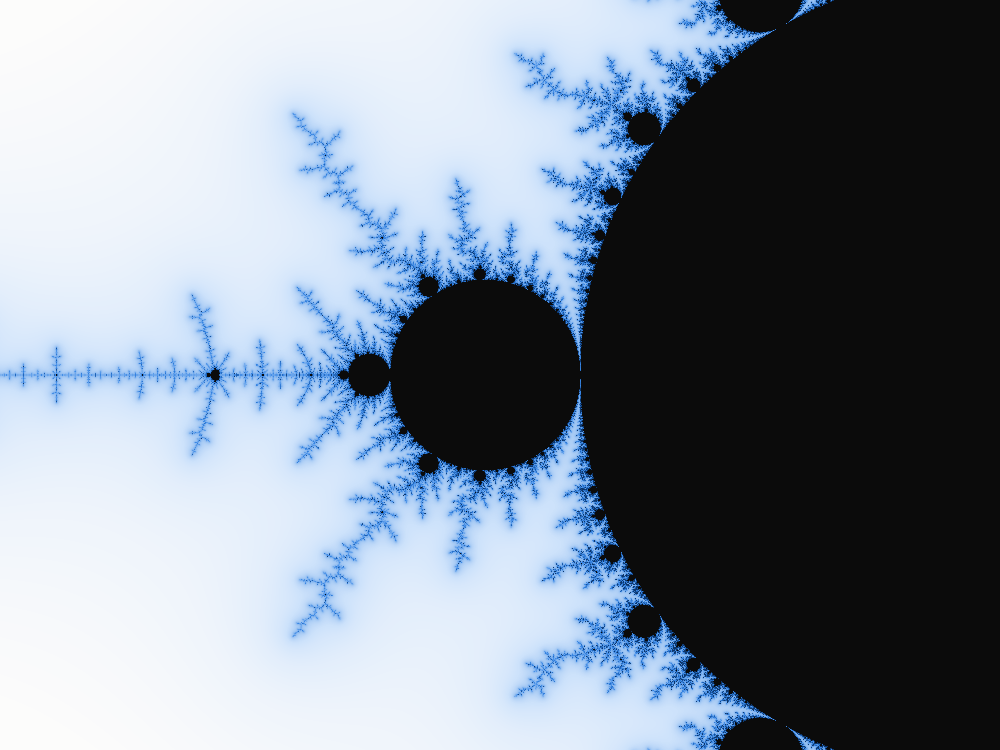

Topology
Do not forget sheets
Canonical localization can identify peripheral sheets. The marked state must remember the covering and access data needed for future arguments.
Paper 1: localization obstructionAn open research program studying whether carefully marked geometric transitions can help bridge renormalization, extremal width, compactness and rigidity in the Mandelbrot local connectivity problem.

The archive combines manuscript arguments, primary-source audits, formal arithmetic, negative examples and explicit open hypotheses. Different evidence types are not interchangeable.
Important: The Mandelbrot Local Connectivity conjecture is open. The source-locked conditional implication “universal protected-tower compactness and rigidity implies MLC” does not prove its antecedent. Finite quadratic-like constructions and green CI checks do not close the global analytic gates.
Canonical localization can identify peripheral sheets. The marked state must remember the covering and access data needed for future arguments.
Paper 1: localization obstructionConstruct actual return domains and separated phase images, rather than inferring analytic geometry from symbolic addresses alone.
Examine the finite two-scale testbedThe missing global transition must compare marked data to conformal width, preserve it across scales and obtain genuine rigidity.
Read the open proof gatesThe papers establish distinct finite or structural interfaces and retain their original released versions. They are not three steps of a completed proof of MLC.
Shows a canonical localization embedding obstruction at specified primitive seeds, constructs a covering/embedding resolution and identifies peripheral winding data.
A one-scale dynamical-plane realization of binary rooted ends, component quotients, shift dynamics, stable replacement and protected access results under declared hypotheses.
Finite full-carrier recognition and access-preserving routing, cohomological attachment ledgers and exact examples showing failures of naive limiting stability.
The most recent research uses one explicit real quadratic center as a controlled testbed for renormalization geometry and combinatorial marking.

For the algebraically isolated center c*, the critical point has exact period 27. Exact real interval arithmetic verifies periods 3 and 9 of nested restrictive intervals. A separate complex-domain argument certifies the following finite return maps uniformly for a small complex parameter disk:
The source [complex return certificate](./research/independent_audits/complex_two_scale_quadratic_like_certificate_20261105.md) uses Rouché and Riemann–Hurwitz with exact outward-bound computations. The domain construction is not proved by Lean's finite arithmetic module.
Using the classical airplane substitution 0 ↦ 011, 1 ↦ 100, the symbolic work finds matching period-3, -9 and -27 kneading data. The actual real signed orbit and independently reconstructed twisted-shift ranks agree at all 27 points.
| Physical return | Candidate angle pair |
|---|---|
| f⁹ · angular period 3 | 3/7 and 4/7 |
| f³ · angular period 9 | 228/511 and 283/511 |
| f · angular period 27 | 59914011/134217727 and 74303716/134217727 |
This is a combinatorial candidate atlas, not a proved parameter-ray landing atlas for the center. See the [source audit](./research/independent_audits/period27_kneading_angle_permutation_source_audit_20261105.md).
Restriction: The center and a certified surrounding parameter disk are attracting, so the ambient filled Julia set has interior and fails Paper 2's separate hypothesis K(f)=J(f). The parameter rays of the tuned component land at its parabolic root, not at an interior center. The precise source-compatible component identity, ray access and sheet transport remain open.
Two Lean modules reproduce the exact finite dynamics using the kernel's computation mechanism. The research archive explicitly distinguishes numerical integer facts from the analytic theorems needed to interpret them.
Computes 27 outward signed-dyadic iterates at precision 2⁻¹⁴⁴, opposite strict endpoint signs, a negative parameter derivative, 26 nonzero orbit signs and all 27 strict orbit ranks.
View Lean sourceChecks the airplane tuning word, the primitive angle-doubling cycle, the complete 27-state twisted-shift permutation and a necessary condition for preserving labels under a 9-to-3 phase quotient.
View Lean sourceFormalization boundary: The generic real-interval soundness argument and the IVT/MVT existence/uniqueness inference are not yet Lean formalized. Neither are complex ray landing, prime ends, localization-sheet geometry or any universal MLC proof gate. The Lean audit note specifies the trust boundary and exact checks.
The source-locked ledger contains 34 imported, 316 internally proved, and 115 open entries. These counts describe a claim inventory, not a percentage of MLC solved. Search the source ledger below; the complete JSON is always available.

Interactive search is loading.
The latest exact finite models do not establish the analytic marked-tower construction, quantitative transition estimates, compactness or rigidity needed by the global reduction.
Obtain a source-compatible all-scale dynamical object carrying prime-end accesses, critical/postcritical data, obstacles, localization sheets and correct transition clocks.
Prove uniform quantitative transport estimates on genuinely realized marked surfaces, with controlled errors and without assuming the desired bounds.
Show that the compactified state excludes invalid degenerations and retains the genuine analytic tower data needed downstream.
Relate the resulting controlled towers to shrinking parameter neighborhoods and the rigidity conclusion of the reduction.
The figures below are reproducible illustrations and exploratory diagnostics. They are not substitutes for proofs.



Every interesting result should be read with its exact source hypotheses and recorded proof boundary.